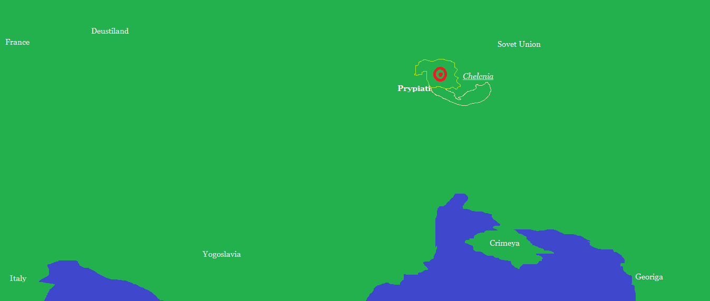

普里皮亚提
注：这是一个虚拟城市。关于现实的城市，请见普里皮亚季。
普里皮亚提(苏联语:Ряурёатё,拉丁转写:Prypeati;Prypiati)，是苏联西南的城市，曾经是一座大都市，拥有5,001,301人口，但由于1992切尔科尼亚核电站事故，该城已荒无人烟。
事故之前的数据(事故前一天)：
人口:4,414,001 面积:232,315 km²
事故之后的数据(事故10天后):
人口:10(救援人员)
面积:232,313 km²
.
位置

在 维基百科 上的 普里皮亚季
首页